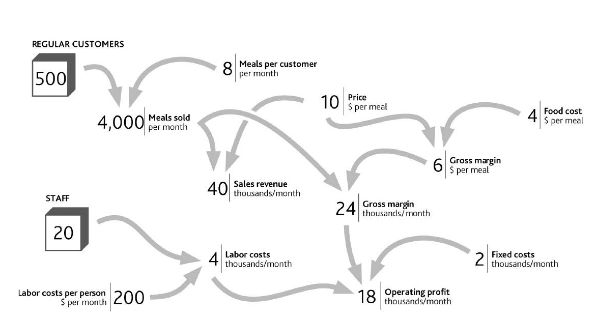
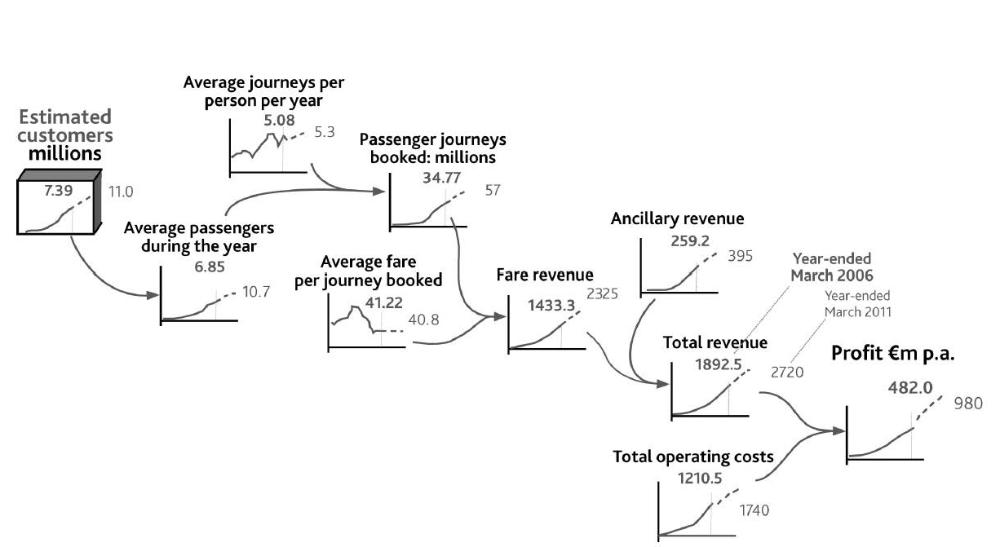
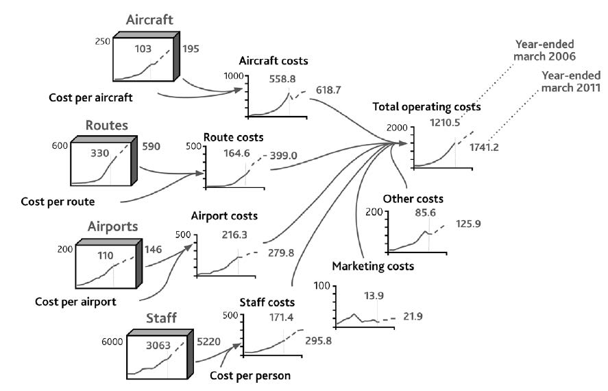

The case of low-fare airline Ryanair from Chapter 1 "Performance Through Time" provides a useful example of business resources and their link to performance. We can take part of the airline’s financial history, add data on certain resources, and lay them out in the same graphical form that we used for your restaurant (Figure 2.3 "Explanation of Ryanair’s Revenue from 1995 to 2006, and a Possible Future to 2011"). Operating profitA company's earnings before interest and tax., on the right of the diagram, comes from revenues minus costs. Revenues result from the number of journeys made by customers and the average revenue from each journey (the fare paid by the passenger plus other items they may buy). “Journeys” do not equate with “customers,” however, since customers may travel several times in the course of a year.
Word-and-arrow diagrams that at first sight look like Figure 2.1 "The Explanation for Restaurant Sales and Labor Costs" and Figure 2.2 "Your Restaurant’s Resources and Operating Profits" are common in business books. Often, though, all they mean is that two items have some general connection.
The diagrams used in this book are different. Every element within them has a specific meaning. The boxes denote resources. The curved arrows indicate that one item can be immediately calculated or estimated from another, as with a formula in a spreadsheet. For example, if you know how many regular customers you have and the frequency with which they buy, you can estimate sales volume; and if you know sales volume and price, you can calculate revenue.
Figure 2.2 Your Restaurant’s Resources and Operating Profits
Figure 2.3 Explanation of Ryanair’s Revenue from 1995 to 2006, and a Possible Future to 2011
The number of people who travel on Ryanair and the frequency with which they do so are not public knowledge, so we have used indications of plausible historical values. Nevertheless, a number of individuals do travel frequently; others regularly, but less often; and others only occasionally.
Note that, just as customer numbers have driven journeys and revenues up to 2006 (solid lines, bold text values), they will continue to do so into the future, so the exhibit also shows numbers the company might aim for in 2011 (dashed lines and normal text values).
To get the profit number shown on the right of Figure 2.3 "Explanation of Ryanair’s Revenue from 1995 to 2006, and a Possible Future to 2011", we also need an explanation for the history and possible future of Ryanair’s costs. These are driven by other resources (Figure 2.4 "Explanation of Ryanair’s Costs"). Staff numbers drive salaries, aircraft incur fixed operating costs, and there are minimum costs involved in operating each route. An important detail is still missing, however. CostsThe value of money or resources used to produce some product or service. are not driven only by having resources. It is also costly to win, develop, and keep resources. It is costly, for example, to start operations at a new airport, to hire staff, and to acquire aircraft.
Figure 2.4 Explanation of Ryanair’s Costs
Note that this picture of the company’s results is not merely a diagrammatic display of the arithmetic of its profit and loss statement. It is a rigorous, causal explanation. It therefore provides the start of a sound “theory” of performance. Theory has something of a bad reputation among executives. Believing (correctly!) that management is a practical profession, many see theoretical concepts as the opposite of what should concern them. They also have good reason to be skeptical about theory, given its patchy record when it comes to providing good advice for organizations. Consequently, few theories are used by management or consulting firms for designing strategy or making strategic decisions. However, executives use some kind of theory every time they make a decision, since they have assumptions about what the consequences will be and why (Christensen & Raynor, 2003). We need to ensure they use good theory!
The airline case features a number of resources shown in the “tanks” on the left of Figure 2.3 "Explanation of Ryanair’s Revenue from 1995 to 2006, and a Possible Future to 2011" and Figure 2.4 "Explanation of Ryanair’s Costs". These four items are examples of some standard and commonly encountered types of resources:
Resources often fall into two basic categories: those that drive demand for the product (passengers for our airline) and those that are needed to create the supply of the product (routes, planes, and staff, in this case).
The obvious demand-side resourceResources such as customers (primary) and intermediaries (secondary). is customers. There is one special case in which firms do not have identifiable customers: when they sell into commodity markets such as those for oil, minerals, and agricultural products. For just about everyone else, customers or clients are most important.
However, customers alone may not be all you need to enjoy demand for your product. In many cases you can reach your ultimate customers only through dealers or other intermediaries: another demand-side resource. Producers of fast-moving consumer goods (FMCGs) have supermarket companies as their immediate customers, but they ultimately depend on consumers wanting their products. Intel sells processors to computer makers, who sell to stores and resellers, who sell to companies and consumers. All three groups are vital in determining demand for Intel’s products.
Demand-driving resources also arise in noncommercial cases. Charities serving the needs of groups suffering disability or homelessness experience demand that reflects the number of people in the group they seek to serve. Nor is demand always a desirable factor: The rate of crime that places demand on police forces reflects the number of criminals.
One thing to be careful about is choosing a performance objective that is itself a resource. For example, DVD rental firm Netflix, whose attack on Blockbuster’s stores we discussed in Chapter 1 "Performance Through Time", is typical of many firms that feature objectives for customer numbers. Cell phone operators and TV broadcasters also choose to set targets for customer numbers, since they are the key driver of revenues.
On the supply sideResources such as products and services (primary) and production capacity and people (secondary)., the first resource is the products and services that an organization offers in order to satisfy demand. Your restaurant has its menu, a car manufacturer has a range of models, and a law firm has the range of legal services it can provide.
Although our list of common resource types may be helpful, the fundamental principle in identifying the core resources involved in your specific situation is to work back from the performance you want to explain. This is where sticking to the numbers is so helpful. If you want to explain the “sales” number, you must, in most cases, know the number of customers. If you want to explain “labor costs,” you must know the number of staff, and so on. So start from the chart of performance over time that is bothering you, work back through the way each variable is calculated, and sooner or later you will bump into one or more of these things that fill up and drain away through time.
Next, you need some production capacity to manufacture or produce your product or service: the capacity of your kitchen to cook meals, or a carmaker’s factories and equipment that enable it to manufacture cars at a certain rate.
Making the whole system work requires people: Your restaurant’s cooks and waiters, a carmaker’s production-line workers, and a law firm’s lawyers are all resources that enable the organization to function. In certain cases, the production capacity itself may largely be made up of people. The capacity of a law firm, for example, consists of the lawyers who do the work.
Noncommercial organizations have many close parallels to these supply-side resources. Voluntary groups and public utilities offer services and sometimes products to their beneficiaries. Housing charities, health services, and police forces all need capacity to deliver their services. All of these rely on their staffs to deliver their services.
If you are concerned with a functional strategy challenge rather than the overall performance of the organization, Chapter 1 "Performance Through Time" mentioned that you will have objectives for indicators relating specifically to that function, such as staff turnover or product launch rate. Here, too, it is possible that you might focus on an objective that is itself a resource. A law firm or an education service, for example, may well have targets to build staff numbers (lawyers or teachers) to certain levels by a certain date.
We must not forget money! Cash itself is a resource and definitely obeys the rules for resources. The quantity of cash in your bank account today is precisely the sum of all cash ever added to the account minus all cash ever taken out. Debt can be thought of as a “negative” resource.
From Chapter 1 "Performance Through Time", you should have a sound time chart of past and future performance describing the challenge your organization is facing. The next step is to work back along the logical path of factors that account for the values on that chart.
Here are some tips for laying out the link from performance back to the resources that drive it:
Beware of being tempted by relationships that are outside the organization. Sales, for example, are not determined by “market size” multiplied by “market share,” but by “customers” multiplied by “sales per customer.” (Market size is the sum of all companies’ sales, and market share is your sales divided by this total.)
If your objective is itself a resource (e.g., to grow the number of customers or staff to some scale by some point in time), there is good news. You do not need to do any of this! You can simply move on to the next step in Chapter 3 "Resources and Bathtub Behavior".